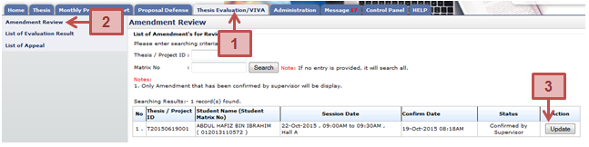
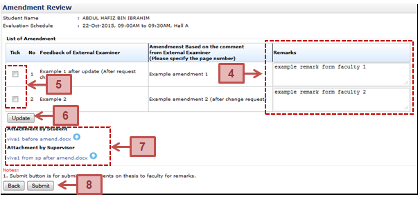

Figure 18: Amendment Review
Prerequisite
Supervisor must verified amendment first
Steps
- Click on the Thesis Evaluation/VIVA tab on the Top panel
- Click on the Review Amendment On Thesis menu on the Left panel
- System will display list of amendment. Click on Update button.
- The next following page will be displayed. Enter remark into Remarks text field provided.
- Then tick the checkbox
- Click Update button to save the update.
- Click on link if to download and view the attachment uploaded by the Student or the Supervisor.
- Click Submit button once the amendment has been reviewed fully and submit it back to the Student
Next Action
Student to resubmit the thesis if no fails. If it is failed then the student need to resubmit the thesis to the faculty for re-viva.
Warning
None
Note
None
Created with the Personal Edition of HelpNDoc: Free Web Help generator